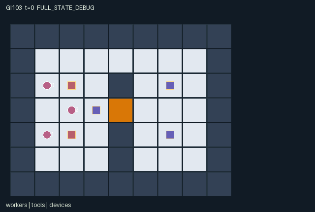

GI103 / SPATIAL
折返维修队
工程师、电工与快递员共享扳手和电池，借助同步协作依次修好桥、泵与发射器。
Original saved demonstration
Recorded native state, often authored scripts or interventions; information scope and failures are preserved in the original provenance. This is a saved demonstration, not live browser play.

Release verification episode
Untrained uniform legal actions. Actual JAX state sampled along the full original episode; full-state debug camera. No human performance or learning claim.

Run this game
crucibles play --game 103
Start Python locally, then open the address printed by the terminal. Installation, multiplayer, takeover and keyboard controls →
Objective, rewards & ending
Exact task contract
{
"objective": "Repair the bridge console, prime the pump and restore the transmitter using the one wrench, one power cell and complementary worker capabilities.",
"natural_termination": "All three devices repaired: bridge progress 3, pump 2 and transmitter 3. Otherwise horizon 96 truncates, with natural completion taking priority.",
"interaction": "Tool possession is exclusive and transferable; engineer bridge work opens the physical central route. Pump priming requires simultaneous electrician work and another worker assistance on two consecutive ticks. Powered transmitter repair requires both specialists with their distinct tools to work together.",
"observation_access": "Fully observable public map and all worker, tool, device and event state. Every entity visibility mask is true. Own role identity is additionally one-hot; float32 observations are integer features divided by 128."
}Declared per-step reward bounds: 0 to 3. Observability: fully_observable.
Rules
- Engineer, electrician and courier share the goal of repairing all three devices.
- There is one wrench and one power cell. Any worker can carry one tool; only matching specialists can do primary work.
- Toggle drops your tool or picks a free adjacent tool. Offer plus an adjacent empty-handed receive action lends a tool.
- Work and assist target the nearest unfinished device within one tile; ties use device order.
- Engineer with wrench repairs the bridge by one progress per tick, or two with simultaneous assistance. Three progress opens the central crossing.
- Electrician with power cell needs simultaneous assistance for two consecutive pump ticks. Missed timing removes one incomplete priming tick.
- After the pump is repaired, the transmitter needs three ticks of simultaneous engineer-with-wrench and electrician-with-cell work.
- The upper switchback is always open. The central crossing becomes usable after its actual map tile changes on bridge completion.
- Each newly repaired device gives every worker +1 once. Completing all three ends play; otherwise step 96 truncates.
- All state shown is public. Distinct worker cells, exclusive tools and deterministic simultaneous movement are enforced by the kernel.
Original mechanism document (historical status wording retained)
Switchback Repair Crew — game-v3-00103 Initial window 0, attempt 00. A=3, O=110, U=10, H=96. Roles 0, 1 and 2 are a structural engineer, electrician and courier. They share the task reward and differ in physical repair capabilities. There is exactly one wrench and one power cell; any worker can transport either, and each worker has capacity one. All objects and the evolving public map have literal state bindings. The 9 by 7 map has a river-bank divider at x=4, a permanently open upper switchback at (4,1), and a broken central crossing at (4,3). The bridge console is at (3,3), the pump at (6,2), and the transmitter at (6,4). Before repair, the central crossing tile is 2 and is not walkable; the bridge completion changes that actual tile to 0. Movement in the completion tick used the old map, so crossing becomes available on the next decision. Actions and work rules Actions 0–4 are wait and cardinal movement. Action 5 drops the worker's carried tool at its position; with empty hands it picks the nearest uncarried tool within Manhattan distance one. Equal-distance tools use the lower tool index. These toggles resolve in worker id order, making same-step ground-object contests deterministic. A later worker can pick up a tool dropped earlier in that same resolution. Actions 8 and 9 implement explicit lending: an offering carrier transfers to an adjacent, empty-handed worker who chooses receive. Tool id order resolves two offers; the lowest eligible role id receives, and capacity is rechecked after each transfer. Tool positions follow their actual carrier after movement and transfers. Action 6 works and 7 assists. Each addresses the nearest unfinished device within distance one; equal distances choose bridge before pump before transmitter. Actions have no effect if no valid nearby target exists. The engineer carrying the wrench adds one bridge progress per work tick, or two when another worker simultaneously assists the bridge. Bridge progress persists and completion opens the crossing. The electrician carrying the power cell primes the pump only while a different worker simultaneously assists that same device. Two consecutive effective ticks are required. While incomplete, a missed joint work tick loses one pump progress, so someone arriving late or leaving early changes the outcome. Once complete the pump remains operational. The transmitter requires the already repaired pump plus engineer-with-wrench and electrician-with-cell both choosing work beside it on the same tick. It needs three joint work ticks; these transmitter ticks need not be consecutive. Every device newly completed gives every worker +1 once. The reward is the count of newly completed devices, bounded by [0,3]. All three completions naturally end play; otherwise t=96 truncates. There is no reward for passing, movement, work attempts or repeated use of an already repaired device. Causal interactions and plausible approaches A tool loan changes which worker can satisfy a later work precondition and removes that opportunity from its former holder. A bridge repair changes every worker's available movement route. A courier can carry a needed tool to a waiting specialist, assist a pump while the engineer moves the wrench toward the transmitter, or accelerate the bridge instead. The pump's decaying partial progress makes partner timing consequential rather than a cosmetic shared score. The final transmitter work physically requires both scarce tools with their matching roles in the same neighbourhood. One possible approach is bridge-first coordination, then send the electrician and engineer through different lanes, stabilize the pump together, and converge on the transmitter. Another is to use the permanently open upper route early, let courier and electrician prepare the pump, and delay the bridge/tool delivery until the engineer can exploit the central crossing. Body blocking and one-tool capacity make a worker's route and willingness to receive relevant to the others. These are plausible strategies from rules, without a claim that either is optimal, learned or empirically richer. The main action hypothesis attempts a full three-device repair against no stochasticity. Separate scripts exercise an explicit courier-to-engineer loan. Paired branches compare assistant versus wait for bridge speed, sustained versus interrupted pump assistance, and receiving versus refusing an offered tool. They have not been executed, and no successful trajectory or terminal receipt exists. Observations, rendering and invariants All 110 values are exact integer features divided by 128. Observations contain own identity, clock/terminal causes, every worker's position/role/held tool, every tool position/type/carrier, every device position/progress/required progress/done flag, the live 7x9 tile map, and newly completed/handoff flags. Every entity is active and visible to every role; no private attribute is added by the scene. The repaired state is a persistent attribute, and event_repair only marks the transition where it first changes. Work progress is a level, not an event counted again each frame. The declared invariants include unique active worker cells and nonnegative clock/work requirements/progress. Further source-level bounds for independent checks are one holder per tool, at most one tool per worker, carriers in -1..2, bridge/pump/transmitter progress in 0..3/0..2/0..3, permanent device completion, positions on passable tiles, and t in 0..96. Tools can legitimately share a tile with their carrier or another grounded object, so object-position uniqueness is not asserted. Variation in which role can stabilize which device, work decay, tool placement or switchback geometry could change the useful division of labour; no such variant or adaptation result is claimed. Interface and evidence boundary The only candidate imports are jax and jax.numpy. All state leaves are fixed-shape int32 or bool arrays; observations and rewards are float32. All masks describe permitted attempts: a legal action may fail because of simultaneous contention or an unmet interaction condition. Out-of-range actions and masked actions deterministically become action 0. Destination contention cancels every conflicting move; no agent may enter another agent's start-of-step cell, including swaps or following a vacated cell in the same tick. No role is removed before joint termination. At terminal states only wait is legal. A nonterminal raw call advances t once; natural termination takes priority over the horizon; terminated and truncated are mutually exclusive. On an already terminal input every state leaf and observation remains unchanged, the clock is frozen, reward is zero and all dones remain true. There is no raw auto-reset. The fixed initial layout and rules are deterministic. reset(key) and raw_step(key, ...) accept the trusted key but consume no randomness; no PRNG state is duplicated or replaced. The design did not prescribe narrow signed integer widths, so int32 is an explicit boundary representation choice. Power-of-two observation scaling is intended to keep represented values exact, but no eager/JIT/vmap parity has been executed or accepted. The manifest binds every state leaf and every observation column. Entity coordinates affect the actual rules, and scene.json only labels those bound objects. The public tile map is explicitly declared public. Full-state debug rendering must remain labelled separately from each role view. No JaxMARL adapter, animation, replay, training, benchmark, scientific acceptance or transfer claim is supplied by this author. The coordinator must supply its separate agent-keyed adapter and independently test legal masks, inactive-role and __all__ behavior without modifying this frozen kernel. Community reference attribution The supplied official JaxMARL README informed the distinction between parallel agent-keyed dictionaries and this flat trusted kernel: https://github.com/bold-lab-ai/JaxMARL/blob/main/README.md . The supplied official Pgx README informed explicit external-key, legality and termination API considerations, not board-game mechanics or heldout layouts: https://github.com/sotetsuk/pgx/blob/main/README.md . The supplied official Craftax README provided broad inspiration for persistent spatial objects and game state, and for separating raw transitions from outer auto-reset: https://github.com/MichaelTMatthews/Craftax/blob/main/README.md . The supplied official PureJaxRL README describes end-to-end JAX training and single-file algorithm implementations, not a new game library: https://github.com/luchris429/purejaxrl/blob/main/README.md . No upstream code was copied. The supplied Craftax_Baselines_ppo_rnn.py was not read for code or used; its bytes are hashed only to verify the supplied reference manifest. No external network request, dependency installation, candidate import, JAX/NumPy numerical execution or model/API call was made by the source author. All action scripts and paired interventions in playthrough.json are UNEXECUTED_AUTHOR_HYPOTHESIS. Only source-byte, stdlib AST/JSON and supplied data-schema checks were performed. Static screening does not establish executability, exact numerical parity, legal trajectories, solvability, strategic richness, learning or generalization. Failed, negative, missing or inconclusive results from later independent evaluation must be retained. Literal source evidence - Crossing map is changed by actual repair: candidate.py:23: `n["map"] = s["map"].at[3, 4].set(jnp.where(n["device_done"][0], 0, 2))` - Explicit bilateral physical lending: candidate.py:98: `transfer = (owner >= 0) & (a[owner_index] == 8) & jnp.any(ready)` - Assistant changes bridge work: candidate.py:113: `bridge_assist = jnp.any(assists & (target == 0))` - Pump pair requirement: candidate.py:116: `pump_work = (jnp.any(works & electrician & (target == 1))` - Delayed transmitter dependency: candidate.py:121: `radio_work = (s["device_done"][1] & jnp.any(works & engineer & (target == 2))` - Actual completion reward: candidate.py:130: `reward = jnp.full((3,), jnp.sum(n["event_repair"].astype(jnp.int32)), jnp.float32)` - Absorbing terminal state: candidate.py:152: `n = jax.tree.map(lambda new, old: jnp.where(state["episode_done"], old, new), proposed, state)` Method line index - candidate.py:12-13: distances. - candidate.py:15-24: refresh. - candidate.py:26-51: reset. - candidate.py:53-61: legal_actions. - candidate.py:63-69: move. - candidate.py:71-131: advance. - candidate.py:133-144: observe. - candidate.py:146-156: raw_step.
Commands
Roles & abilities
agent_0 Structural engineer: wrench-required bridge and transmitter work
agent_1 Electrician: power-cell-required pump and transmitter work
agent_2 Courier: transport either scarce tool and assist timed repairs
Observation permissions
Training receives only the original observation rows. Role cameras use declared visibility; debug cameras are explicitly marked. Local benchmark records log debug exposure and role takeover history.
Exact observation layout
[
{
"slice": [
0,
3
],
"meaning": "Self role one-hot, divided by 128",
"visibility": "self"
},
{
"slice": [
3,
7
],
"meaning": "Public [t,episode_done,terminated,truncated], divided by 128",
"visibility": "public"
},
{
"slice": [
7,
11
],
"meaning": "Worker 0: [x,y,specialist_role,held_tool]; -1 means empty. All divided by 128.",
"visibility": "public"
},
{
"slice": [
11,
15
],
"meaning": "Worker 1: [x,y,specialist_role,held_tool]; -1 means empty. All divided by 128.",
"visibility": "public"
},
{
"slice": [
15,
19
],
"meaning": "Worker 2: [x,y,specialist_role,held_tool]; -1 means empty. All divided by 128.",
"visibility": "public"
},
{
"slice": [
19,
23
],
"meaning": "Tool 0: [x,y,kind,carrier]; carrier -1 means ground. All divided by 128.",
"visibility": "public"
},
{
"slice": [
23,
27
],
"meaning": "Tool 1: [x,y,kind,carrier]; carrier -1 means ground. All divided by 128.",
"visibility": "public"
},
{
"slice": [
27,
32
],
"meaning": "Device 0: [x,y,progress,required_progress,repaired_flag], divided by 128.",
"visibility": "public"
},
{
"slice": [
32,
37
],
"meaning": "Device 1: [x,y,progress,required_progress,repaired_flag], divided by 128.",
"visibility": "public"
},
{
"slice": [
37,
42
],
"meaning": "Device 2: [x,y,progress,required_progress,repaired_flag], divided by 128.",
"visibility": "public"
},
{
"slice": [
42,
105
],
"meaning": "Public current 7x9 map flattened y then x, including actual crossing opening, divided by 128",
"visibility": "public"
},
{
"slice": [
105,
108
],
"meaning": "Public newly repaired device flags in device order, divided by 128",
"visibility": "public"
},
{
"slice": [
108,
110
],
"meaning": "Public bilateral tool-handoff flags in tool order, divided by 128",
"visibility": "public"
}
]Entity visibility & attributes
[
{
"id": "workers",
"kind": "agent",
"count": 3,
"position": [
"agent_pos"
],
"active": [
"agent_active"
],
"visibility": [
"agent_vis"
],
"attributes": [
{
"state_path": [
"agent_role"
],
"meaning": "Role: 0 engineer, 1 electrician, 2 courier",
"display": "category"
},
{
"state_path": [
"agent_holding"
],
"meaning": "Held tool: -1 empty, 0 wrench, 1 power cell",
"display": "category"
}
]
},
{
"id": "tools",
"kind": "object",
"count": 2,
"position": [
"tool_pos"
],
"active": [
"tool_active"
],
"visibility": [
"tool_vis"
],
"attributes": [
{
"state_path": [
"tool_kind"
],
"meaning": "Tool type: 0 wrench, 1 power cell",
"display": "category"
},
{
"state_path": [
"tool_carrier"
],
"meaning": "Carrier role id; -1 means on ground",
"display": "category"
}
]
},
{
"id": "devices",
"kind": "object",
"count": 3,
"position": [
"device_pos"
],
"active": [
"device_active"
],
"visibility": [
"device_vis"
],
"attributes": [
{
"state_path": [
"device_progress"
],
"meaning": "Current actual work progress",
"display": "bar"
},
{
"state_path": [
"device_need"
],
"meaning": "Progress required to finish this device",
"display": "number"
},
{
"state_path": [
"device_done"
],
"meaning": "Device repaired and permanently operational",
"display": "flag"
}
]
}
]Actual verification & provenance
Per-game execution receipt
{
"game": "gi103",
"status": "PASS",
"verification_revision": 2,
"source_sha256": "d98dbe089d3ce8809102038f69d9fd15b489bc1986d2dadb267d4a45b15faef4",
"seed": 20261101,
"runtime": {
"jax": "0.4.38",
"numpy": "1.26.4",
"devices": [
"TFRT_CPU_0"
]
},
"dimensions": {
"num_agents": 3,
"observation_size": 110,
"num_actions": 10,
"max_steps": 96
},
"checks": {
"eager_reset": {
"status": "PASS",
"seconds": 3.0971314907073975
},
"observation_spaces_legal_masks": {
"status": "PASS",
"seconds": 1.3657987117767334
},
"eager_step": {
"status": "PASS",
"seconds": 2.5285122394561768
},
"jit_reset": {
"status": "PASS",
"seconds": 0.23612713813781738
},
"jit_step": {
"status": "PASS",
"seconds": 0.7879087924957275
},
"eager_jit_integer_parity_float_measurement": {
"status": "PASS",
"seconds": 0.0006000995635986328
},
"jit_vmap_reset": {
"status": "PASS",
"seconds": 0.11016392707824707
},
"jit_vmap_step": {
"status": "PASS",
"seconds": 0.7533934116363525
},
"outer_autoreset_api": {
"status": "PASS",
"seconds": 0.7142722606658936
},
"full_original_horizon_episode_and_render": {
"status": "PASS",
"seconds": 0.9465131759643555
}
},
"human_scores": null,
"browser_controls": "PENDING",
"failures": [],
"elapsed_seconds": 11.118271112442017,
"float_parity_max_abs": 0.0,
"numerical_parity": "EXACT",
"raw_terminal_absorbing": "PASS",
"terminal_outer_reset": "PASS",
"episode_steps": 96,
"scripted_random_returns": [
1.0,
1.0,
1.0
],
"terminal": true,
"demo_information": "FULL_STATE_DEBUG",
"demo_frames": 25,
"render_roles_checked": 3
}Chromium control verification
{
"game": "gi103",
"status": "PASS",
"human_scores": null,
"engineering": true,
"checks": [
"catalog_selected_and_real_native_reset",
"keyboard_native_direction_command",
"dom_queue_and_native_step",
"second_participant_ownership_and_native_joint_step",
"all_roles_individually_controllable_no_role_cap",
"explicit_debug_camera",
"release_to_pure_ai_without_reset",
"close_session_preserves_log"
],
"ui_sha256": "96243f9de144b80b5e20a114330e2206bdcd58d3efc9c6f13bbc08b95cacc14d",
"keyboard_action_id": 1,
"seconds": 4.769117116928101
}Original identity and file hashes
{
"id": 103,
"key": "gi103",
"title": "折返维修队",
"summary": "工程师、电工与快递员共享扳手和电池，借助同步协作依次修好桥、泵与发射器。",
"tags": [
"专长互补",
"同步维修"
],
"family": "spatial",
"dimensions": {
"num_agents": 3,
"observation_size": 110,
"num_actions": 10,
"max_steps": 96
},
"source_sha256": "d98dbe089d3ce8809102038f69d9fd15b489bc1986d2dadb267d4a45b15faef4",
"manifest_sha256": "bcc2b68dcc1c58a5e322a1851c401ef952173f4885025536dce7c0460abb1dbc",
"files": [
{
"file": "candidate.py",
"sha256": "d98dbe089d3ce8809102038f69d9fd15b489bc1986d2dadb267d4a45b15faef4",
"bytes": 8993,
"origin": "work/exp_2/game_incubator_v3/community_games222_225_visualization_root222_v1/native154_candidate/registry/v2/games/game-v3-00103/candidate.py"
},
{
"file": "manifest.json",
"sha256": "bcc2b68dcc1c58a5e322a1851c401ef952173f4885025536dce7c0460abb1dbc",
"bytes": 11610,
"origin": "work/exp_2/game_incubator_v3/community_games222_225_visualization_root222_v1/native154_candidate/registry/v2/games/game-v3-00103/manifest.json"
},
{
"file": "scene.json",
"sha256": "e5e9d4ce2343dcf7edf157c4b0bd19c152a79eeb420cc684dd04b93c2ea2aa52",
"bytes": 7437,
"origin": "work/exp_2/game_incubator_v3/community_games222_225_visualization_root222_v1/native154_candidate/registry/v2/games/game-v3-00103/scene.json"
},
{
"file": "mechanism.md",
"sha256": "61f71e757100b5fa438c1c2a1ece2d6eb563be93e98380ad5cd69c60e6be7e61",
"bytes": 10616,
"origin": "work/exp_2/game_incubator_v3/sources/game-v3-00103/attempt_00/mechanism.md"
},
{
"file": "playthrough.json",
"sha256": "fefe5261b41f50c178566e16bd3bebe24217aea64222d8e503aafe3a17f24d66",
"bytes": 5045,
"origin": "work/exp_2/game_incubator_v3/sources/game-v3-00103/attempt_00/playthrough.json"
}
],
"original_status": "NATIVE154_REFERENCE",
"original_saved_replay": true,
"release_validation": "PASS",
"human_scores": null,
"browser_validation": "PASS"
}